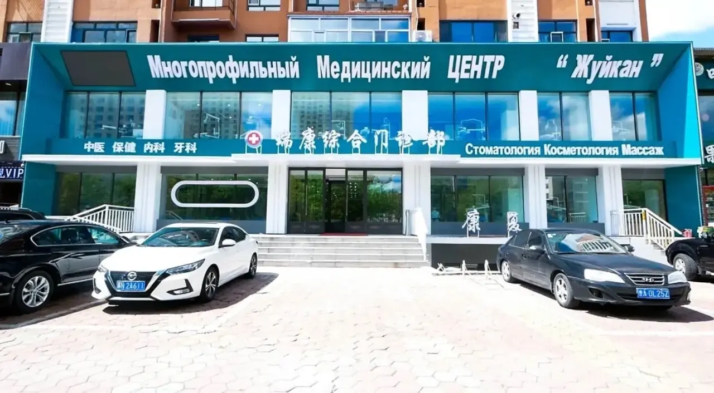

Стоматология на другом берегу Амура
Медицинский центр «Жуйкан» в Хэйхэ, напротив Благовещенска. Русскоговорящие координаторы помогают с дорогой, гостиницей и встречей, а в центре есть переводчик.
Благовещенск
Хэйхэ, ул. Ван Су, 112

О центре
Многопрофильный центр «Жуйкан» (瑞康综合门诊) работает в Хэйхэ с 2012 года и занимает около 3 000 м²*. Главное направление центра: стоматология. Здесь делают КТ и цифровое сканирование, есть своя зуботехническая лаборатория.
Китайский знать не нужно. В центре работают русскоговорящие сотрудники и переводчик, а с организацией поездки помогают координаторы Олеся и Александр.
* Год основания и площадь указаны по данным сайта клиники.
Лечение зубов
Точный план, сроки и стоимость врач называет после осмотра и диагностики.
- Протезирование
- Коронки из диоксида циркония, металлокерамика, мостовидные и съёмные протезы.
- Имплантация и хирургия
- Установка имплантов, удаление зубов и подготовка к протезированию.
- Лечение зубов
- Кариес, пульпит, лечение корневых каналов, восстановление формы зуба.
- Эстетика улыбки
- Виниры, профессиональная гигиена, отбеливание, исправление прикуса.
Кроме стоматологии, в центре есть диагностика и УЗИ, косметология, физиотерапия и консультации терапевта.
Спросить про лечение по телефонуКак добраться из Благовещенска
Сначала позвоните координатору. Вместе выберете дату и способ переправы и договоритесь о встрече на китайской стороне.
По международному мосту
Международный автобус идёт из Благовещенска в Хэйхэ через пункт пропуска Кани-Курган.
- Выберите рейс и купите билет.
- Уточните у перевозчика место и время посадки.
- Пройдите пограничный контроль.
- В Хэйхэ встретьтесь с координатором.
Время в пути зависит от рейса и очереди на границе.
На теплоходе через Амур
Теплоход ходит между Благовещенском и Хэйхэ в сезон навигации. Рейсы зависят от погоды.
- Проверьте, открыта ли навигация, и посмотрите расписание.
- Купите билет в кассе порта: Благовещенск, ул. Чайковского, 1.
- Пройдите пограничный контроль.
- После таможни встретьтесь с координатором.
При сильном ветре и подвижке льда рейсы могут отменять.
Перед покупкой билетов уточните документы для въезда, расписание, цену и место посадки. Зимой схема речной переправы меняется. Источник: «Амурская правда», 15.05.2026
Как проходит поездка
-
Позвоните координатору
Расскажите, что нужно лечить и когда вам удобно приехать.
-
Договоритесь о деталях
Выберите дорогу, гостиницу и место встречи.
-
Приезжайте в Хэйхэ
Координатор поможет добраться до центра.
-
Получите план лечения
Врач осмотрит вас и предложит варианты лечения.
Фото с поездок
Отзывы
Из нашего сообщества в MAX. Это личный опыт участников поездок: результаты и сроки лечения у каждого свои.
Ребята встретили, заселили в гостиницу, возили в клинику и обратно, а также чудесно поводили по экскурсиям.
Читать отзыв полностьюСвернуть
Огромная благодарность Олесе и Александру за потрясающую организацию поездки на лечение в Китай! Ребята встретили, заселили в гостиницу, возили в клинику и обратно, а также чудесно поводили по экскурсиям. Само лечение прошло выше всяких похвал: сделали КТ, врачи работают в идеальной чистоте с одноразовыми расходниками. Несмотря на языковой барьер (спасибо отличному переводчику), мы прекрасно понимали друг друга. Весь сложный объем работ занял ровно пять дней без потери качества. Зубы сделаны превосходно!
Хотим выразить благодарность Олесе и Александру за организацию, сопровождение и всевозможную помощь.
Читать полностьюСвернуть
Доброе утро. Хотим выразить благодарность Олесе и Александру за организацию, сопровождение и всевозможную помощь при вставлении зубов, нахождении в Хэй-Хэ. Все прошло прекрасно, муж доволен!
Олеся не просто переводчик, а настоящий помощник. Она знает лучшие места для шопинга, решает любые бытовые вопросы.
Читать полностьюСвернуть
Поездка в приграничный китайский город Хэйхэ стала для нас незабываемой благодаря гиду Олесе. В отличие от стандартных экскурсоводов, она показала не туристический фасад, а настоящую жизнь города: мы ели различные блюда в местных кафешках и гуляли по набережной Амура с китайской стороны. Олеся не просто переводчик, а настоящий помощник. Она знает лучшие места для шопинга, решает любые бытовые вопросы.
Сделали протезирование. Между приёмами у врача успела: иглоукалывание, массаж, чистка лица.
Читать полностьюСвернуть
Сделали протезирование. Между приёмами у врача успела: иглоукалывание, массаж, чистка лица. Это была не просто стоматологическая поездка, а настоящий мини-спа-тур.
Частые вопросы
Как узнать стоимость лечения?
Позвоните координатору и расскажите, какая помощь нужна. Окончательный план, стоимость и сроки врач определит после осмотра и диагностики.
Можно ли приехать, если я не говорю по-китайски?
Да. В центре работают русскоговорящие сотрудники и переводчик. Сопровождение и встречу согласуйте с координатором заранее.
Кто поможет с гостиницей и встречей?
С организацией поездки помогают Олеся и Александр. До покупки билетов уточните, что входит в сопровождение, где вас встретят и как оплачиваются проживание и трансфер.
Сколько дней нужно на поездку?
Это зависит от обследования и выбранного лечения. Примерные сроки согласуйте с клиникой до поездки. Сроки из отзывов относятся к конкретным пациентам, у вас они могут быть другими.
Какие документы нужны для пересечения границы?
Проверьте срок действия загранпаспорта и условия въезда для вашей цели поездки. Требования уточните у перевозчика и в официальных консульских источниках до покупки билетов.
Связаться с координатором
Позвоните, чтобы обсудить лечение и поездку. Новости центра выходят в Telegram, а участники поездок общаются в сообществе в MAX.
+7 924 681-06-98Адрес
Китай, провинция Хэйлунцзян, Хэйхэ, район Айхуэй, ул. Ван Су, 112
黑河市爱辉区王肃街112号
Ежедневно с 8:00 до 22:00. Перед визитом подтвердите запись.